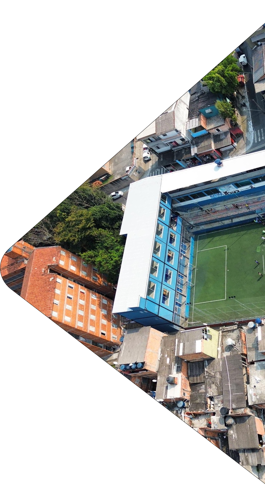
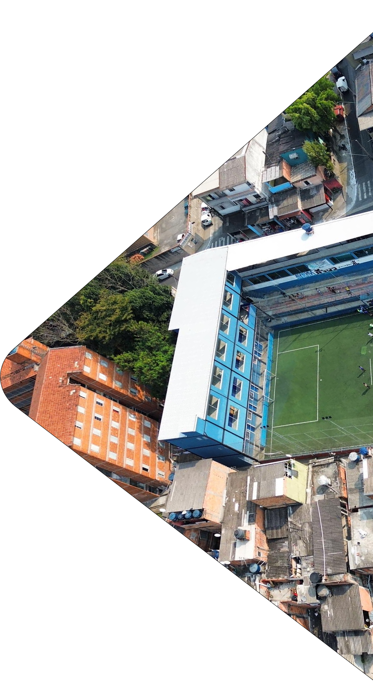

Conectando talentos da periferia ao mercado de trabalho.
 


Uma plataforma que centraliza vagas de emprego, conectando profissionais e empresas. Recrutadores podem divulgar oportunidades, e candidatos encontram vagas de forma mais prática.
Ampliamos a visibilidade dos currículos, permitindo que recrutadores encontrem profissionais com base em suas habilidades. Perfis completos funcionam como um currículo digital, destacando qualificações e experiências.
Um sistema é intuitivo e fácil de usar, criado para atender pessoas com baixa escolaridade e pouca experiência. Com uma interface simples, permite que qualquer um crie seu perfil e se candidate a vagas sem dificuldades.